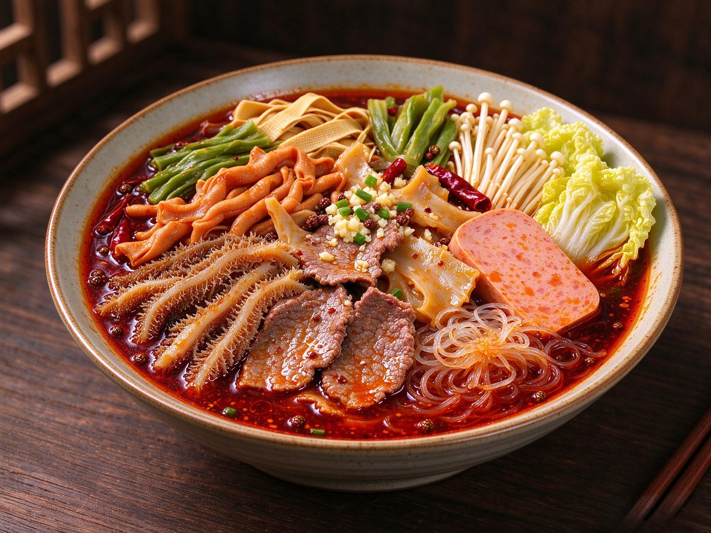

定番の人気トッピング
牛とセンマイの麻辣湯
やわらかい牛薄切り肉と、コリコリした食感のセンマイが主役。千張やハム、海帯、うずら卵を合わせて、食べごたえのある一杯に。
- 牛薄切り肉
- センマイ（毛肚）
- 千張（豆腐皮）
- ロースハム
- 海帯結び
- えのき
- 白菜
- うずら卵

具材を選んで、麺と辛さを決めて、レジで重さを量る。下の組み合わせはあくまで一例です。お好きな具材でどうぞ。
入り口のトレーとトングを持って、具材コーナーへ。
野菜・きのこ・肉・海鮮・豆腐・練り物から、好きなものを。
春雨・平打ち麺・米線から麺を、小辛・中辛・大辛から辛さを。
レジで重さを量ってお会計。スープで仕上げた一杯をお持ちします。
写真と具材の一例です。同じ組み合わせを頼むもよし、気になる具材を足すもよし。
やわらかい牛薄切り肉と、コリコリした食感のセンマイが主役。千張やハム、海帯、うずら卵を合わせて、食べごたえのある一杯に。
春雨がスープを吸って、食べ終わりまで味わいが続きます。具材をたっぷり楽しみたい日に。

白身魚のやわらかさと、ぷりっとした海老団子の食感。根菜や豆腐も合わせた、満足感のある組み合わせです。

角切りの牛肉と、歯ごたえのあるれんこん。しっかり食べたいときに向いた一杯です。
※ 価格は店頭にてご案内しています。具材は仕入れ状況により内容が変わることがあります。
一例です。仕入れ状況により、取扱いのない場合があります。
スープは花椒と唐辛子を効かせた麻辣スープ。辛さは3段階からお選びいただけます。
まずはここから。花椒の香りを楽しみたい方に。
辛さと香りのバランス重視。いちばん人気の目安です。
しっかり辛く。しびれと辛さを強めにしたい方に。
※ 辛さの調整は店頭でお申し付けください。辛いものが苦手な方は小辛からお試しください。